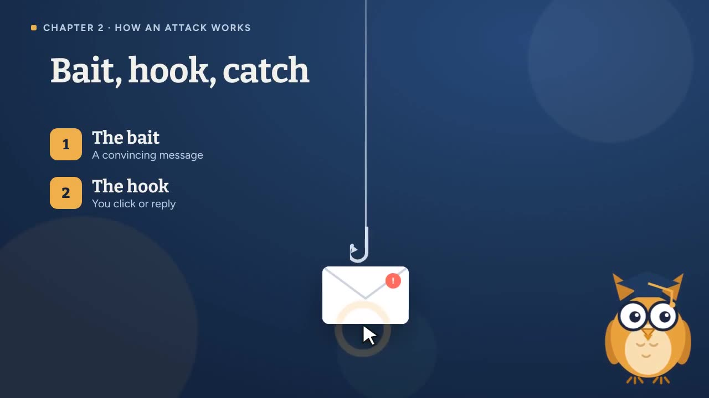
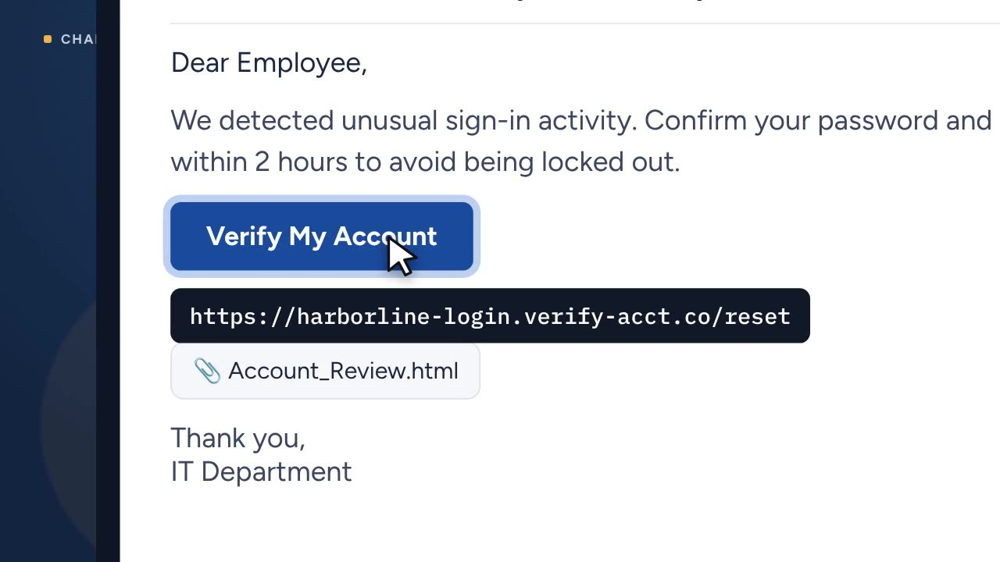

Spot the Phish
Most phishing training is a slide deck people click through while answering email. I designed this course around practice instead: learners spend most of their time spotting, sorting, and deciding.

The problem
In this scenario, Harborline's security team had a recurring problem: employees kept clicking links in simulated phishing emails, and one real incident nearly sent an $18,400 vendor payment to an attacker. The existing training was an annual, 30-slide module with a quiz at the end. People passed the quiz and still clicked.
Learning objectives
I wrote objectives as observable behaviors, then built at least one practice activity for each.
- Identify the common red flags in a phishing email (look-alike senders, urgency, disguised links, unexpected attachments, credential requests, generic tone).
- Choose a safe response to a suspicious message: stop, verify through a trusted channel, report, delete.
- Apply the SLAM check (Sender, Links, Attachments, Message) to any email in under a minute.
Designing the experience
The course follows a show, try, decide, keep structure. A short video builds the mental model, a sequence of activities moves from guided to independent practice, and a job aid supports the behavior after the course ends.


Key design decisions
A character guide in a short video
Professor Hoot, an original owl character, narrates a two-minute animated briefing with lip-synced dialogue and captions. A friendly guide lowers the "compliance dread" that security training usually carries.
Why: short, story-driven video builds the mental model fast, so the practice that follows has something to hang on.
An interactive pause inside the video
The video stops itself and asks learners to click the detail that proves an email is fake, with spoken feedback for each choice.
Why: retrieval practice in the middle of instruction keeps learners active instead of passively watching.
Misses count in the phish hunt
Learners click every warning sign in an email with no markers to guide them. Clicking something harmless counts as a miss and explains why that part is normal.
Why: real inboxes don't highlight the danger. Penalizing guessing rewards careful reading, and explaining "normal" parts prevents over-suspicion.
A realistic payment-fraud scenario
As Maya in accounts payable, learners respond to a vendor's "new bank details" email. Three endings show consequences, including a "safe but incomplete" path where they forget to report.
Why: business email compromise is one of the costliest real threats, and the decision to verify through a trusted channel is exactly what I want learners to rehearse.
A job aid, not just a quiz
The SLAM check is an interactive checklist that gives a recommendation based on what the learner notices.
Why: the course lasts 20 minutes, but the inbox is forever. Performance support carries the behavior back to work.
Sequential unlocking, with a reviewer mode
Each section unlocks after the one before it, progress saves automatically, and a certificate unlocks at the end. Reviewers can switch on a mode that opens everything.
Why: sequencing protects the scaffolding from guided to independent practice, while reviewer mode respects a hiring manager's time.
Accessibility
- Every interaction works with a keyboard, with visible focus states throughout.
- The video has synchronized captions that can be toggled, and the narration script doubles as a transcript.
- Color is never the only signal: correct and incorrect states also use icons, borders, and text.
- Animations respect the "reduce motion" setting, and the layout adapts to phones and dark mode.
How I'd measure success
I planned evaluation across the four Kirkpatrick levels, with the emphasis on behavior rather than quiz scores.
What I'd do next
- Pilot with a small group and watch where people hesitate or guess.
- Add short monthly "spot the fake" challenges to keep the skill fresh between annual trainings.
- Package it as SCORM or xAPI so an LMS can track completion and scores.